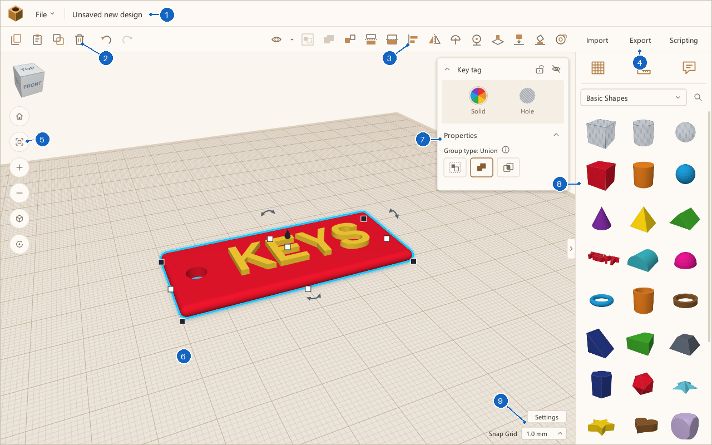

ScottiCAD user manual
ScottiCAD is a 3D modelling program for makers. You build a part the way you would with blocks: drag shapes onto the build plate, turn some of them into holes, and group them so the holes are cut away. Then you export the part for your 3D printer.
This manual starts with a short tutorial and then covers each part of the program in turn. It describes ScottiCAD 0.3.

Contents
Start here
- Getting started: the window, and a first part from start to finish
- Looking around: turning, moving and zooming the view
Building
- Shapes: the shape panel, properties, colours and text
- Moving, sizing and turning: selecting, handles, exact sizes and the snap grid
- Holes and groups: cutting shapes away and joining them
- Lining up and measuring: align, mirror, the ruler, the construction plane and notes
- Split and section view: cutting a part in two, and looking inside one
Files and printing
- Opening, saving, importing and exporting
- Getting ready to print: the filament estimate and the print check
- Settings: units, the build plate and themes
Going further
- Scripting: building with code
- Working with an AI assistant
Reference
- The shape library: every shape, with pictures
- Keyboard and mouse
About the pictures
The screenshots show ScottiCAD on Windows in its Tan theme. On Linux the window looks the same. Yours may use another theme (Settings has all six).
The pictures are made by a script, make_images.py, which drives ScottiCAD and builds every model in them from the shape library. Run it again after the program changes to bring the pictures up to date.